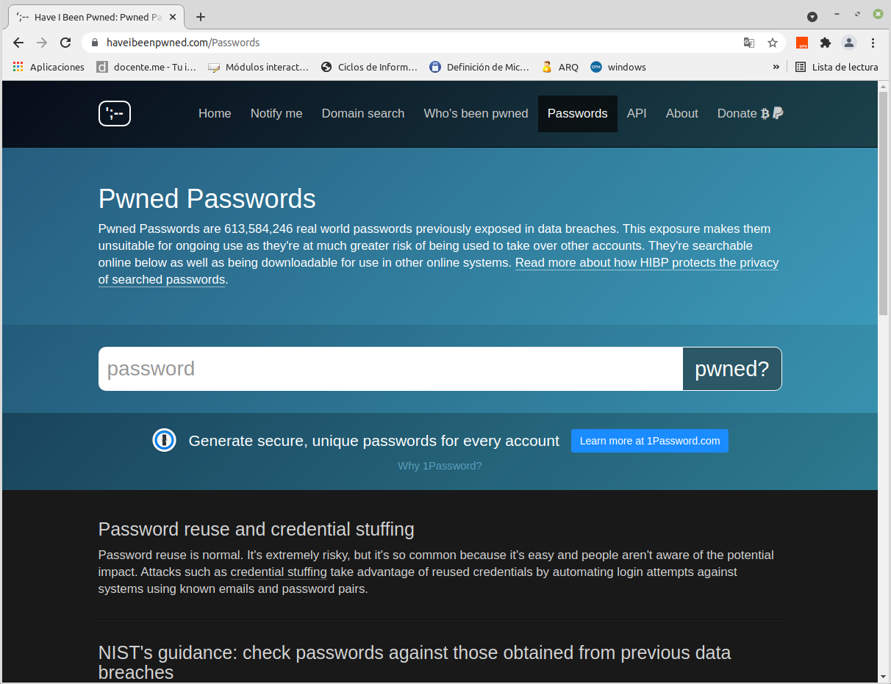
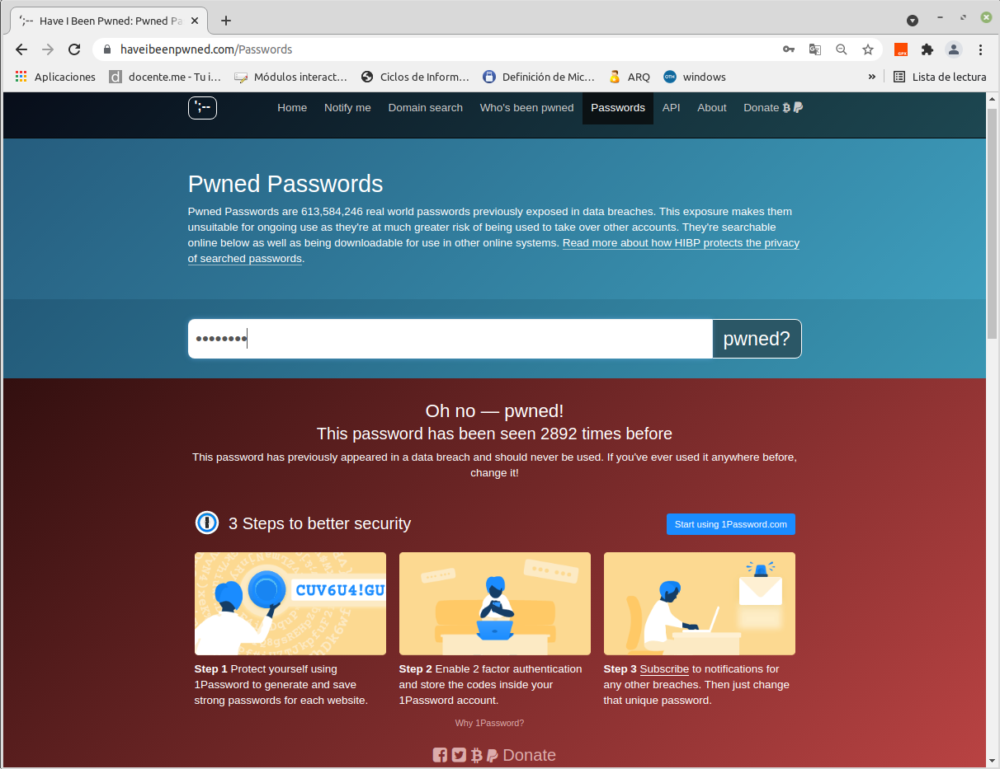
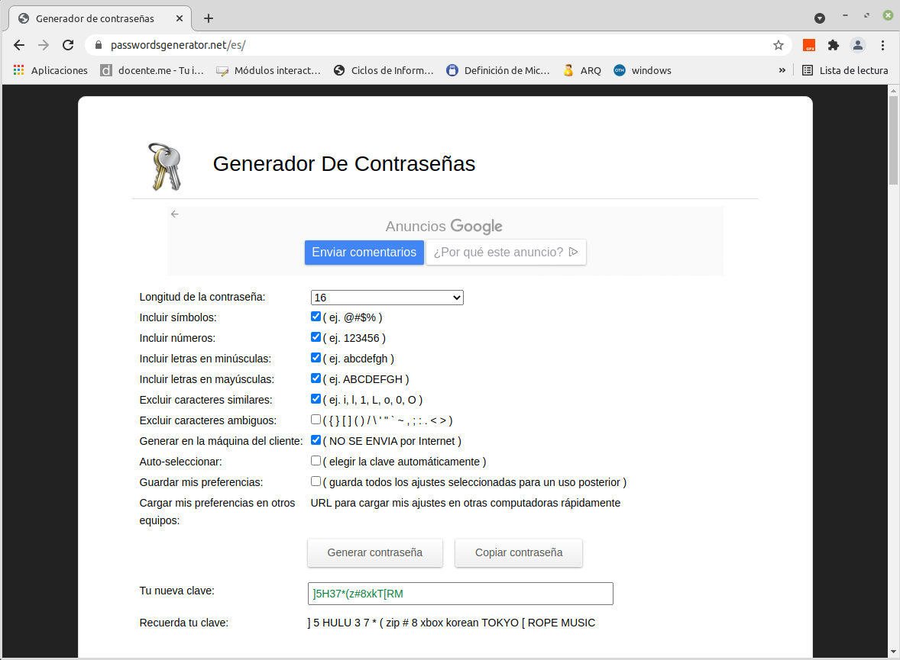
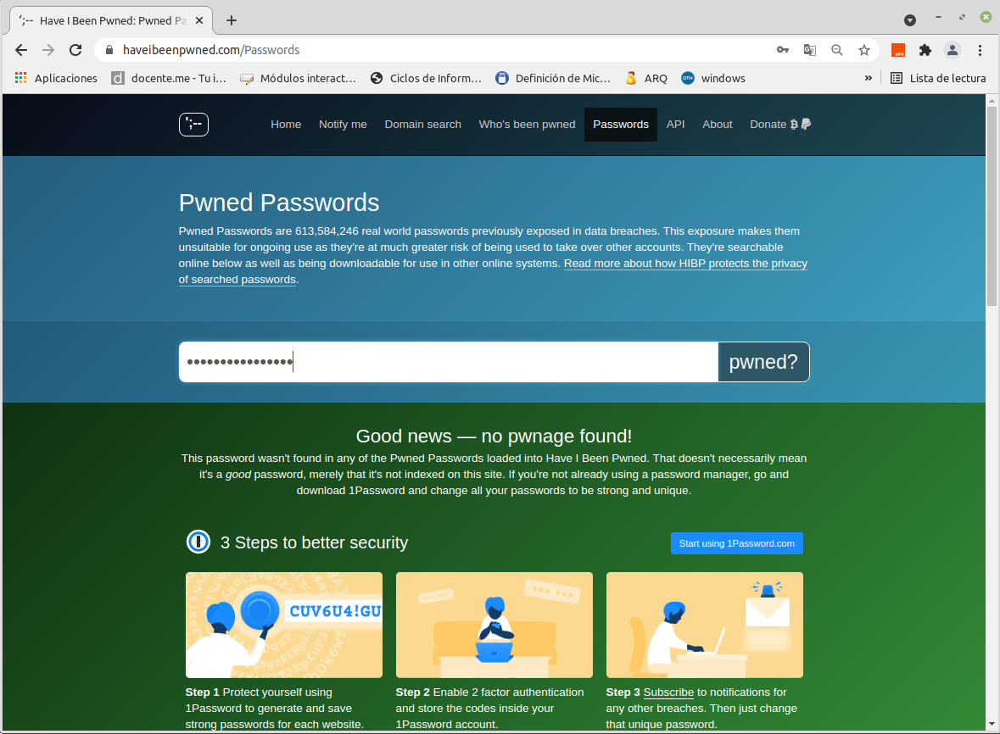
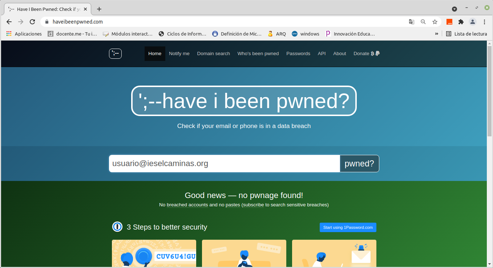
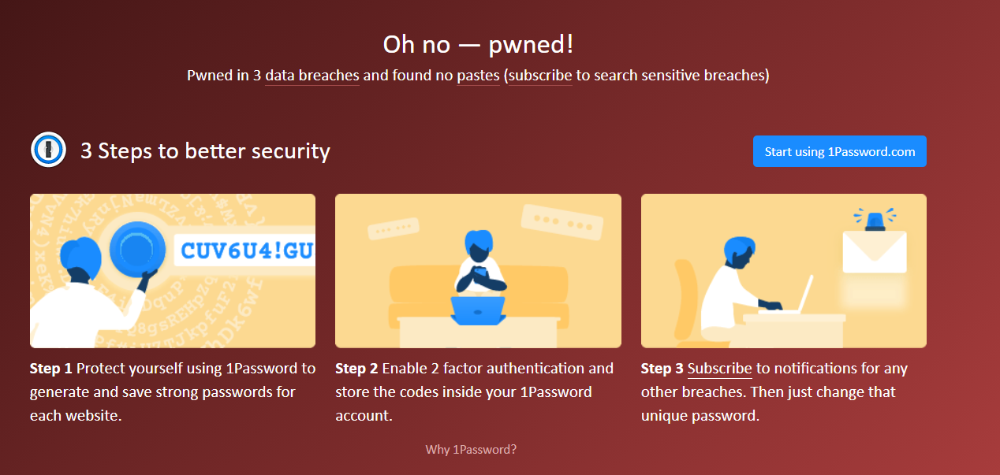
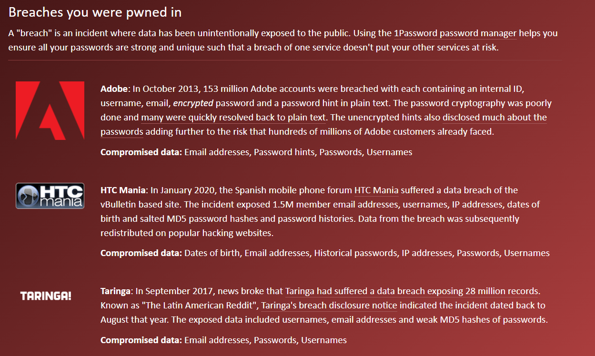

3.4 Brechas de seguridad y contraseñas inseguras
1. Introducción
Cada vez se utilizan más servicios en línea de manera continuada, desde el correo electrónico, banca electrónica hasta plataformas de vídeos bajo demanda y otros servicios. Para ello se usan contraseñas de acceso como se han visto en anteriores capítulos y a menudo se puede caer en la tentación de utilizar la misma contraseña para varios servicios. Usar nuestro correo profesional no es una buena idea (mejor usar un correo electrónico personal).
Todo lo anterior puede convertirse en un peligro, ya que se podría sufrir la sustracción de una contraseña o simplemente que un servicio que consideramos seguro, sea atacado dejando expuestas todas las contraseñas de sus usuarios. Para poder estar al día de estos problemas de seguridad y la posible filtración de estos datos se tienen múltiples servicios como pueden ser:
2. Haveibeenpwned contraseñas
Si se quiere comprobar cómo de segura es una contraseña, se tiene la herramienta haveibeenpwneds.
Esta herramienta se tiene disponible en formato web donde se pueden realizar varias comprobaciones, por ejemplo, si nuestra información de acceso (login) ha sido sustraída de alguno de los servicios que utilizamos y por lo tanto se ha visto comprometida, podemos acceder al apartado Passwords donde nos encontramos con la siguiente pantalla.

Figura 1. Sitio web haveibeenpwneds.
Como ejemplo de prueba, se rellena el cuadro de texto con una contraseña sencilla típica que alguien podría usar donde la misma es una fecha de cumpleaños, ejemplo: 20011980. A continuación, pulsamos en "pwned"? y podemos comprobar que esta contraseña ha sido vulnerada múltiples veces, en concreto, 2.892 veces (a fecha 21/09/2021).

Figura 2. Comprobación de contraseña vulnerable.
A la hora de usar contraseñas lo más recomendable es usar un generador de contraseñas automático que nos proporcione una con las características que se quiera o que establezca la polica de seguridad de la empresa. Una página que permite generar contraseñas seguras aleatorias es https://passwordsgenerator.net/es/.
2.1 Creando una contraseña segura
A continuación, se va a utilizar una contraseña que nos generará automáticamente la herramienta passwordgenerator para hacer la prueba de que esta contraseña no ha sido nunca expuesta.

Figura 3. Generación de contraseña aleatoria.
Si se introduce la contraseña generada en el sitio web , se pude observar que esa contraseña no ha sido vulnerada (Figura 4).

Figura 4. Comprobación de contraseña generada de manera aleatoria.
Como se puede comprobar, para que una contraseña sea segura hay que utilizar mayúsculas, minúsculas, números y si es posible también caracteres especiales. Cuantos más caracteres tenga una contraseña y más tipos de carácter se usen, más segura será.
3. Haveibeenpwned correos electrónicos
3.1 Introducir el correo
Al igual que con la contraseña, se pude comprobar el estado de un correo electrónico. En este caso, se va a probar si una cuenta de correo (ficticia) ha formado parte de alguna filtración de datos, para ello, hay que rellenar la caja de texto y pulsar sobre "pwned"?. Como se puede observar en la Figura 5, la web devuelve una buena noticia, esta cuenta no ha sufrido brechas de seguridad o está publicada en alguna recopilación de cuentas de usuario.

Figura 5. Comprobación de una cuenta de correo ficticia.
En el caso de una cuenta de correo comprometida, mostraría el siguiente mensaje diciendo el número de ocasiones en las que se ha visto comprometida y nos ofrece unas pautas para mejorar la seguridad: generador de contraseñas, segundo factor y notificaciones.

Figura 6. Mensaje de cuenta de correo comprometida.
Si se accede a la parte inferior de la web, se puede ver cuentas veces y en que brechas de seguridad se ha visto afectada.

Figura 7. Información sobre la cuenta de correo comprometida.
Que la información permanezca a salvo no solo depende de una buena contraseña, ya que la información de inicio de sesión en distintos servicios: correo electrónico, almacenamiento online, video bajo demanda, etc, se ha podido ver comprometida porque los servicios que se utilizan no han sido lo suficientemente seguros y han recibido ataques o han puesto al descubierto información de sus usuarios. Por lo tanto, hay que tener en cuenta una serie de buenas practicas o recomendaciones para la identificación en los distintos sitios web:
- No usar la misma contraseña que se usa con la cuenta de correo.
- No usar la misma contraseña para más de un servicio.
- Generar contraseñas fuertes, a través de alguna regla propia (regla mnemotécnica). O través de un generador (web, aplicación).
- Usar programa para la gestión de contraseñas (LastPass o KeePass).
- Activar el segundo factor de autenticación o gestores de autorización.
- Cambiar la contraseña de las cuentas de correo electrónico periódicamente.
- Usar los inicios de sesión asociados a servicios: Google, Facebook. Esta opción puede ser algo peligrosa, si se pierde el control de esa cuenta todos los servicios asociados pueden verse comprometidos.
Regla mnemotécnica: Es una "técnica de memorización" usando una palabra o frase corta y sencilla de recordar, podemos relacionarla con el servicio, con el objetivo de recordarla con facilidad.
Obra publicada con Licencia Creative Commons Reconocimiento No comercial Compartir igual 4.0